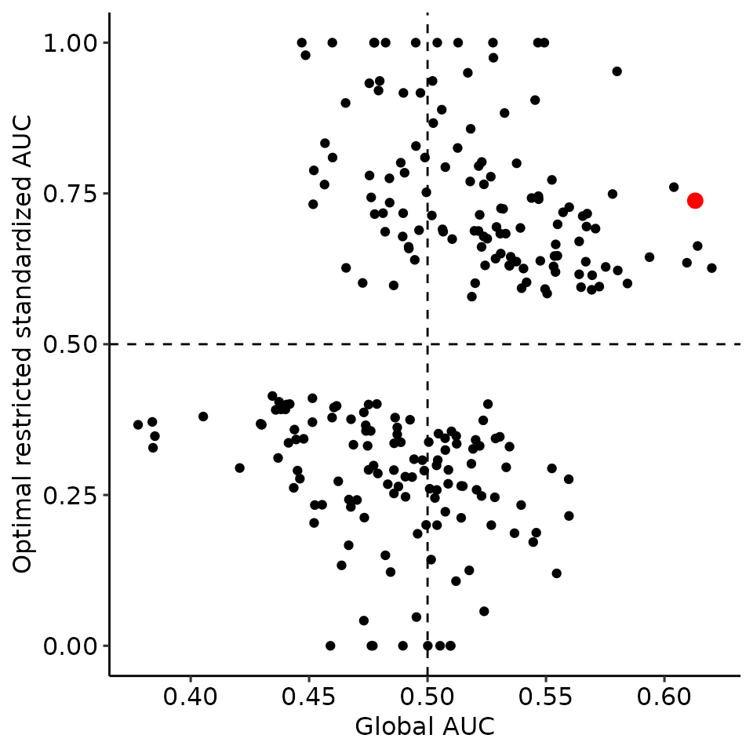
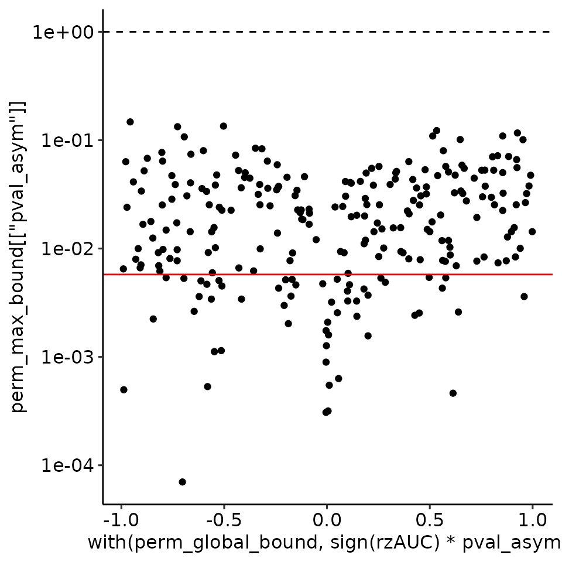

Paper 08: rROC permutation
paper_08_rROC_permutation_bias.Rmd
options(warn = 1)
library(restrictedROC)
library(ggplot2)
# In publication we did parallelisation to speedup, for vignette we do not include it
# library(future)
# plan(multisession)Optimizing rROC introduces a bias, therefore we propose permutation p-values
current_sim <- function(dists) {
# restrictedROC::sim(dists, do_melt = FALSE, length.out = 2500)
restrictedROC::sim(dists, do_melt = FALSE, length.out = 100) # For vignette
}
set.seed(129387)
simdata <- current_sim(
list(
"positive" = function(length.out) {
unif <- runif(length.out)
vapply(unif, function(x) {
if (x > .2) {
rnorm(1, mean = 6, sd = 1)
} else {
rnorm(1, mean = 9, sd = 1)
}
}, numeric(1))
},
"negative" = function(length.out) {
unif <- runif(length.out)
vapply(unif, function(x) {
if (x > .02) {
rnorm(1, mean = 6, sd = 1)
} else {
rnorm(1, mean = 9, sd = 1)
}
}, numeric(1))
}
)
)
simdata_melted <- restrictedROC::melt_gendata(simdata)
colnames(simdata_melted) <- c("predictor", "response")
plots_rroc_way_1 <- restrictedROC::plot_density_rROC_empirical(
values_grouped = simdata,
direction = "<",
positive_label = "positive"
)
rroc_way_permutation <- restrictedROC::simple_rROC_permutation(
response = simdata_melted[["response"]],
predictor = simdata_melted[["predictor"]],
direction = "<",
positive_label = "positive",
n_permutations = 250,
parallel_permutations = FALSE
### The following has been done in publication
# n_permutations = 10000,
# parallel_permutations = TRUE
)
# saveRDS(plots_rroc_way_1, "plots_rroc_way_1.rds")
# saveRDS(rroc_way_permutation, "rroc_way_permutation.rds")
# plots_rroc_way_1 <- readRDS("plots_rroc_way_1.rds")
# rroc_way_permutation <- readRDS("rroc_way_permutation.rds")
perm_global_bound <- rroc_way_permutation[["perm_global_bound"]][1:1000, ]
perm_max_bound <- rroc_way_permutation[["perm_max_bound"]][1:1000, ]
# pdf("rzAUC_permutation_bias_sim.pdf", width = 6, height = 6)
# Get the density plot from fig_rzauc_twoway, page 1, OR from here:
print(plots_rroc_way_1[["plots"]] + theme(legend.position = "none"))
# dev.off()
# pdf("rzAUC_permutation_bias_sim_PERM.pdf", width = 3.2, height = 3.2)
print(
ggplot2::qplot(x = perm_global_bound[["auc"]], y = perm_max_bound[["auc"]]) +
geom_point(data = data.frame(
x = plots_rroc_way_1[["single_rROC"]][["global"]][["auc"]],
y = plots_rroc_way_1[["single_rROC"]][["max_total"]][["auc"]]
), aes(x = x, y = y), col = "red", size = 3) +
xlab("Global AUC") + ylab("Optimal restricted standardized AUC") +
ggpubr::theme_pubr() +
geom_vline(xintercept = .5, linetype = "dashed") +
geom_hline(yintercept = .5, linetype = "dashed")
)
#> Warning: `qplot()` was deprecated in ggplot2 3.4.0.
#> This warning is displayed once every 8 hours.
#> Call `lifecycle::last_lifecycle_warnings()` to see where this warning was
#> generated.
#> Warning: Removed 750 rows containing missing values or values outside the scale range
#> (`geom_point()`).
print(
ggplot2::qplot(x = perm_global_bound[["rzAUC"]], y = perm_max_bound[["rzAUC"]]) +
geom_point(data = data.frame(
x = plots_rroc_way_1[["single_rROC"]][["global"]][["rzAUC"]],
y = plots_rroc_way_1[["single_rROC"]][["max_total"]][["rzAUC"]]
), aes(x = x, y = y), col = "red", size = 3) +
xlab("Global rzAUC") + ylab("Optimal restricted standardized rzAUC") +
ggpubr::theme_pubr() +
geom_vline(xintercept = 0, linetype = "dashed") +
geom_hline(yintercept = 0, linetype = "dashed")
)
#> Warning: Removed 750 rows containing missing values or values outside the scale range
#> (`geom_point()`).
print(
ggplot2::qplot(x = with(perm_global_bound, sign(rzAUC) * pval_asym), y = perm_max_bound[["pval_asym"]]) +
ggplot2::scale_y_log10() +
ggplot2::geom_hline(yintercept = plots_rroc_way_1[["single_rROC"]][["global"]][["pval_asym"]], col = "red") +
ggplot2::geom_hline(yintercept = 1, linetype = "dashed") +
ggpubr::theme_pubr()
)
#> Warning: Removed 750 rows containing missing values or values outside the scale range
#> (`geom_point()`).
print(
ggplot2::qplot(x = perm_global_bound[["pval_asym"]], y = perm_max_bound[["pval_asym"]], col = factor(sign(perm_global_bound[["rzAUC"]])), geom = "blank") +
ggplot2::geom_point(size = .5) +
ggplot2::scale_y_log10() +
ggplot2::geom_hline(yintercept = plots_rroc_way_1[["single_rROC"]][["global"]][["pval_asym"]], col = "red") +
ggplot2::geom_hline(yintercept = 1, linetype = "dashed") +
ggpubr::theme_pubr()
)
#> Warning: Removed 750 rows containing missing values or values outside the scale range
#> (`geom_point()`).
# dev.off()